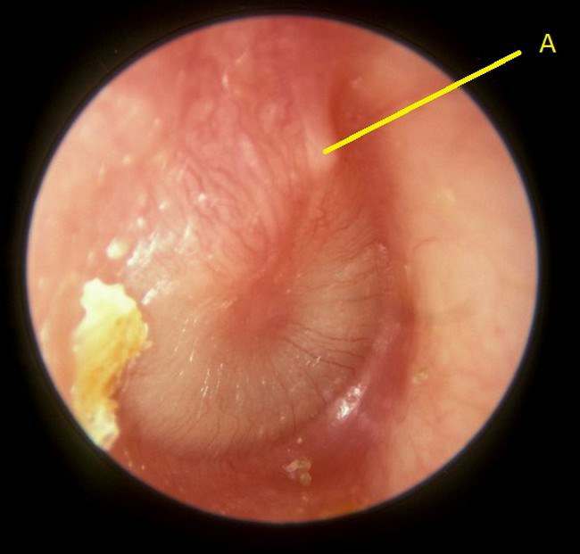
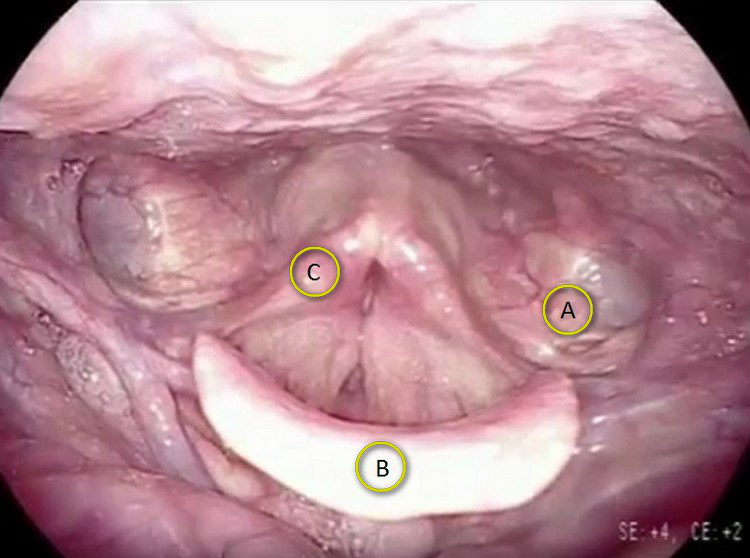
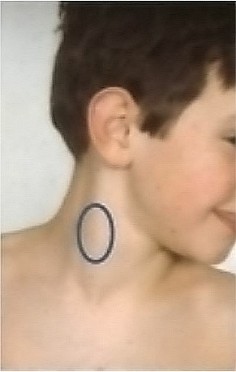
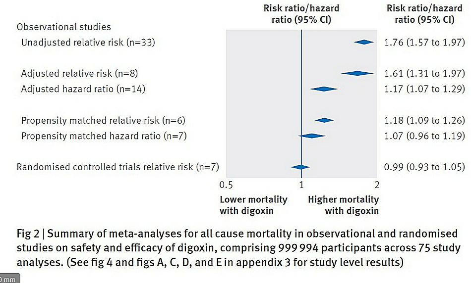
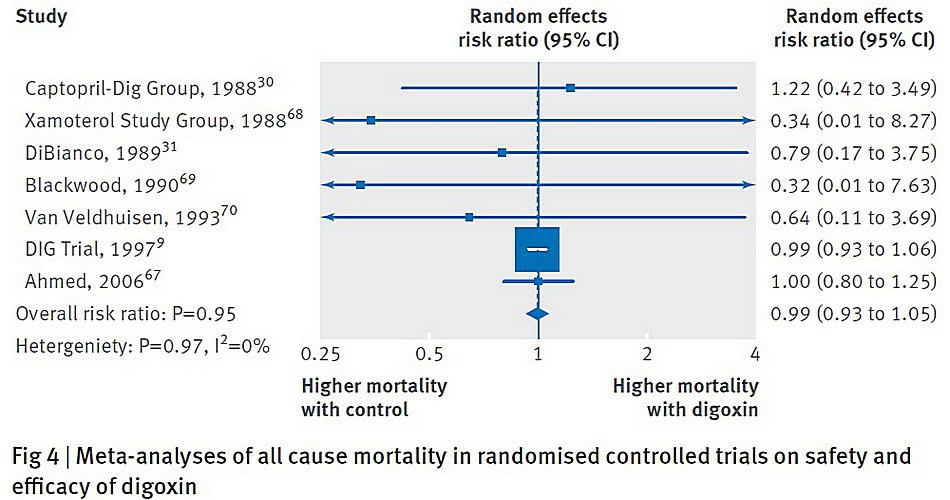

Vraag 1
Op het spreekuur van de huisarts komt een vrouw van 28 jaar. Ze heeft sinds drie dagen koorts. Vanochtend was de temperatuur 39.6 graden. Ze is al een week aan het snotteren en hoesten. Ze hoest af en toe wat slijm op. Het slikken doet pijn. Ze kan normaal drinken. Ze eet nog wel, maar minder dan normaal. Paracetamol 3x1000mg/dag heeft een onvoldoende pijnstillend effect. Ze vraagt een antibioticum.
Wat zijn alarmsymptomen waar de huisarts bij lichamelijk onderzoek op moet letten? Noem minimaal drie, en maximaal vijf, alarmsymptomen.
Modelantwoord
Asymmetrie gehemeltebogen (uvula naar lateraal verplaatst)
Onvermogen mond geheel te openen (trismus)
Moeite met slikken
Ernstig ziek zijn
Zeer fors gezwollen hals-lymfeklieren (alleen ‘gezwollen hals-lymfeklieren’ is niet goed)
1 punt voor minimaal drie juiste antwoorden.
Vraag 2
Zijn de Centor-criteria in deze casus relevant? Leg uit.
Modelantwoord
Nee, de Centor-criteria zijn hier niet relevant, want:
1. De Centor-criteria zijn er om te bepalen hoe groot de kans is op een infectie door een streptokok.
2. Bij een gezond iemand maakt het voor het beleid (en voor de prognose) niet uit of de infectie veroorzaakt wordt door een streptokok.
2 punten: 1 punt voor goed antwoord, 1 punt voor juiste uitleg.
Vraag 3
De patiënte heeft een blanco voorgeschiedenis. De huisarts vindt bij lichamelijk onderzoek geen alarmsymptomen.
Moet je deze patiënt een antibioticum geven? Leg uit en geef minimaal drie, en maximaal vier argumenten.
Moet je deze patiënt een antibioticum geven? Leg uit en geef minimaal drie, en maximaal vier argumenten.
Modelantwoord
Nee, deze patiënte hoef je geen antibiotica te geven, want:
1. Ze is niet ernstig ziek (forse ziekteverschijnselen, abnormaal beloop, trismus/kwijlen)
2. Ze gebruikt geen weerstandsverminderende medicatie (zoals corticosteroïden, cytostatica, biologicals)
3. Ze heeft geen afweer verlagende stoornis (recente chemo/radiotherapie, immuunstoornis, diabetes mellitus)
4. Ze heeft geen acuut reuma in de voorgeschiedenis
1 punt als minimaal drie antwoorden goed.
Vraag 4
Een moeder komt met haar zoontje van 2 jaar bij de huisarts. Hij heeft sinds 2 dagen koorts tot 39 graden. Hij eet weinig, maar drinkt goed. Hij snottert flink sinds een week. Bij onderzoek ziet de huisarts een alerte niet-zieke jongen. Bij otoscopie ziet zij rechts onderstaand trommelvliesbeeld. Links is er een normaal trommelvlies. Retroauriculair zijn er geen afwijkingen. De moeder wilt weten of hij antibiotica moet krijgen.
Wat is structuur ‘A’ bij dit trommelvlies?

Modelantwoord
Hamer, hamersteel, malleus, processus lateralis mallei
1 punt voor juiste antwoord.
Vraag 5
Op welke verschijnselen die duiden op een ernstige complicatie moet je letten bij lichamelijk onderzoek?
Modelantwoord
Afstaan van het oor
Rood mastoïd
Evt. tekenen van lymfadenitis / (zeer) grote pijnlijke hals-lymfeklier
Uit de casus is bekend dat het gaat om een goed drinkende, alerte niet-zieke jongen. Als de student antwoordt te letten op verschijnselen van ernstig ziek zijn, dan is dit antwoord minder goed dan de hierboven genoemde antwoorden.
1 punt voor minimaal twee juiste antwoorden.
Vraag 6
De huisarts stelt een rechtszijdige otitis media acuta vast.
Wat is op dit moment de aangewezen behandeling? Leg uit.
Wat is op dit moment de aangewezen behandeling? Leg uit.
Modelantwoord
Paracetamol
Evt. neusspray (NHG zegt van niet, praktijk meestal wel)
Geen antibiotica want:
- Niet dubbelzijdig
- Bestaat sinds kort (<3 dagen)
- Geen alarmsymptomen (niet erg ziek, normaal drinken)
2 punten: 1 punt als student geen antibioticum geeft en twee of drie redenen noemt om geen antibioticum te geven, 1 punt als student pijnstilling (en evt. neusspray) noemt.
Vraag 7
Een vrouw van 28 jaar komt bij de KNO-arts op het spreekuur. Ze heeft al het hele jaar last van een verstopte neus. Doordat ze slecht door haar neus ademt voelt ze zich benauwd en ligt ze ’s nachts vaak wakker. Als ze snottert dan is dit meestal waterig van kleur. Ze heeft ook twee maanden last van een drukgevoel over de kaak- en voorhoofdsholtes. Bij voorover bukken neemt dit drukgevoel toe. De KNO-arts wilt weten of de klachten gerelateerd zijn aan een allergische rhinitis.
Wat zijn de beste hypothesetoetsende vragen die ze hiertoe kan stellen? Stel minimaal drie en maximaal vijf vragen.
Modelantwoord
Seizoensgebonden
Situatiegebonden (dieren, stof etc.)
Jeuk ogen
Tranende ogen
Jeuk neus
Niezen
1 punt als minimaal 3 antwoorden goed.
Vraag 8
Passen de klachten bij een sinusitis? Leg uit.
Modelantwoord
Ja, de klachten kunnen bij een (chronische) sinusitis passen vanwege het drukgevoel over de holtes, de druk bij voorover bukken en de verstopte neus.
1 punt bij de juiste uitleg.
Vraag 9
De patiënte wilt graag dat de arts verder onderzoek doet naar de oorzaak van haar klachten.
Welke aanvullende diagnostiek is het meest zinvol om te doen? Noem maximaal twee onderzoeken.
Welke aanvullende diagnostiek is het meest zinvol om te doen? Noem maximaal twee onderzoeken.
Modelantwoord
multi-RAST / allergietest (Phadiatop)
endoscopie neus
Een x-sinus draagt niet bij aan de diagnose. Een CT-scan is bij deze klachten op dit moment minder geïndiceerd dan de hierboven genoemde onderzoeken.
2 punten: ieder goed antwoord is 1 punt.
Vraag 10
Onderstaande structuren zijn gerelateerd aan de conchae. Waar in de neusholte ten opzichte van de conchae monden deze uit?
sinus maxillaris: …
sinus frontalis: …
cellulae ethmoidales: …
sinus sphenoidalis: …
sinus maxillaris: …
sinus frontalis: …
cellulae ethmoidales: …
sinus sphenoidalis: …
Modelantwoord
sinus maxillaris: onder de concha medius (tussen middelste en onderste concha), ook wel meatus nasi medius
sinus frontalis: onder de middelste concha, ook wel meatus nasi medius
cellulae ethmoidales: onder de middelste concha (meatus nasi medius); en tevens deels tussen de bovenste en middelste concha, de meatus nasi superior
sinus sphenoidalis: recessus spheno-ethmoidalis (boven concha superior)
2 punten: ieder juist antwoord is ½ punt.
Vraag 11
Om 12.00 uur ’s middags komt de moeder van Quintijn, 2 jaar, hevig geëmotioneerd met hem op de arm de huisartsenpraktijk binnen lopen. Ze vertelt het volgende: “Quintijn heeft zojuist een aanval gehad waarbij hij het bewustzijn verloor. Dit duurde 5 minuten. Hij schokte met armen en benen. Ik was bang dat hij doodging. Toen hij wakker werd was hij heel suf. Ik ben bang dat het door de koorts komt. Gisteren was er nog niets aan de hand, maar sinds vanochtend voelt hij heel warm aan en heeft hij 39.8 graden koorts. Hijzelf, maar ook zijn broertje en zusje, hebben dit nog nooit gehad”.
Is dit een typische of een atypische koortsstuip? Leg uit.
Modelantwoord
Het gaat om een typische/gewone koortsstuip. Argumenten:
- De duur van de aanval
- De leeftijd van Quintijn
- Eerste keer (deze episode) zo’n aanval
- Aan het begin van de koortsepisode
Een atypische koortsstuip is de meest voorkomende reden van een insult in de huisartsenpraktijk.
1 punt als student noemt dat het om een typische/gewone koortsstuip gaat, en 1 punt voor minimaal drie van de genoemde argumenten.
Vraag 12
Welk lichamelijk onderzoek moet je doen? Wees volledig.
Modelantwoord
Algemeen: indruk (suf, huilen, alert), hartfrequentie, ademhalingsfrequentie, saturatie, petechiën, turgor, slijmvliezen
Longen: auscultatie
KNO: keel, tonsillen, hals-lymfeklieren, trommelvliezen
1 punt als minimaal tractus 1) algemeen, 2) longen en 3) KNO genoemd. 1 punt voor >6 zinvolle items.
Vraag 13
Na onderzoek stelt de huisarts vast dat Quintijn een gewone virale bovenste luchtweginfectie heeft.
Welke adviezen moet je aan de ouders geven voor als Quintijn de komende dagen weer een wegraking krijgt?
Welke adviezen moet je aan de ouders geven voor als Quintijn de komende dagen weer een wegraking krijgt?
Modelantwoord
advies om de huisarts te bellen (of medische hulp in te schakelen)
zorgen dat Quintijn zich niet kan bezeren
neerleggen
op zijn zij draaien
mond leegmaken
1 punt voor twee of meer juiste adviezen.
Vraag 14
Lara is 8 jaar. Ze komt met haar moeder op het spreekuur bij de huisarts. Ze heeft al 4 weken een hese stem. Ze is niet ziek of verkouden geweest.
Wat is op dit moment de meest waarschijnlijke diagnose?
Modelantwoord
Stembandknobbeltjes en/of overbelasting van de stem.
1 punt.
Vraag 15
Welke structuren bij laryngoscopie zijn hieronder aangegeven met de letters A t/m C?

Modelantwoord
A: sinus piriformis
B: epiglottis
C: arytenoïd
1 punt voor drie juiste antwoorden.
Vraag 16
Een meisje van 10 jaar zat bij vader achterop de scooter toen ze werd aangereden. Ze had geen helm op. Ze wordt door de ambulance naar de eerste hulp gebracht. Haar EMV-score is E3 M5 V4. Er druppelt wat bloed uit het rechter oor.
Wat zijn, naast het bloed uit het oor, mogelijke symptomen waar je naar moet kijken omdat ze kunnen duiden op een schedelbasisfractuur?
Modelantwoord
1. Bloed / liquor uit neus of oor
2. Retroauriculair hematoom (battle sign)
3. Scheef gelaat / parese aangezichtsmusculatuur en/of tong
4. Nystagmus
5. Periorbitaal hematoom
Maximaal 2 punten; per categorie ½ punt (minimaal één goed antwoord in een categorie is voldoende voor ½ punt).
Vraag 17
Wat kan, naast een schedelbasisfractuur, de oorzaak zijn van het bloed dat uit het rechter oor druppelt?
Modelantwoord
Trommelvliesperforatie
Laceratie gehoorgang
Fractuur gehoorgang
Bloeding vanuit middenoor
1 punt voor minimaal 3 goede antwoorden.
Vraag 18
Een jongen van 8 jaar komt bij de huisarts want hij heeft sinds drie weken een zwelling in zijn hals. Deze doet geen pijn. Hij is niet ziek geweest. Als de huisarts palpeert dan voelt deze een zwelling van ongeveer 3 cm groot op de hieronder aangegeven locatie.
Welke diagnoses moet je in ieder geval overwegen?

Modelantwoord
Maligniteit
Laterale halscyste
Reactieve lymfeklier (onschuldige lymfeklierzwelling) én/of lymfadenitis
½ punt voor 2 antwoorden goed, 1 punt voor 3 antwoorden goed.
Vraag 19
Uit welke embryonale structuur of primordium ontstaan onderstaande structuren?
uitwendige gehoorgang: …
tonsillen: …
bovenste bijschildklieren: …
onderste bijschildklieren: …
uitwendige gehoorgang: …
tonsillen: …
bovenste bijschildklieren: …
onderste bijschildklieren: …
Modelantwoord
uitwendige gehoorgang: 1e kieuwspleet
tonsillen: 2e kieuwzakje
bovenste bijschildklieren: 4e kieuwzakje
onderste bijschildklieren: 3e kieuwzakje
2 punten: ieder juist antwoord is ½ punt.
Vraag 20
Een huisarts ziet op de huisartsenpost een peuter met klachten van misselijkheid, braken, veel drinken, veel plassen. Daarbij is het kind wat afgevallen en suffig. Bij lichamelijk onderzoek door de huisarts is er geen koorts, geen dehydratie, en is het kind normaal alert. Aan het hart, longen en abdomen zijn er geen afwijkingen. De huisarts stelt de ouders gerust en stuurt ze met de peuter naar huis. Twee dagen later overlijdt het kind. De ouders dienen een tuchtklacht in tegen de huisarts.
Wat is de norm waaraan het handelen van de huisarts zal worden getoetst?
Modelantwoord
Of deze heeft gehandeld zoals van een redelijk bekwame beroepsbeoefenaar mag worden verwacht, conform de door de beroepsgroep vastgestelde handelswijze zoals onder meer neergelegd kan zijn in richtlijnen.
Juist antwoord 1 punt.
Vraag 21
Wat is hier het doel van het tuchtrecht?
Modelantwoord
Bewaking van de kwaliteit van het handelen van de individuele beroepsbeoefenaren (BIG-geregistreerden) in de gezondheidszorg.
Juist antwoord 1 punt.
Vraag 22
Met welke verandering in het tuchtrecht per 1-4-2019 kan deze huisarts waarschijnlijk te maken krijgen?
Modelantwoord
Een berisping wordt niet altijd meer gepubliceerd.
Het kan zijn dat de huisarts de kosten moet vergoeden die door de klagers zijn gemaakt.
Een juist antwoord is 1 punt.
Vraag 23
Casus – Screening op baarmoederhalskanker.
In het huidige bevolkingsonderzoek naar baarmoederhalskanker wordt gescreend op aanwezigheid van hrHPV. Pas wanneer dat afwijkend is wordt de cytologie beoordeeld en een PAP-score bepaald.
Waarom volstaat het om te testen op aanwezigheid van hrHPV?
Waarom volstaat het om te testen op aanwezigheid van hrHPV?
Modelantwoord
hrHPV is (vrijwel) de enige oorzaak van (pre)maligne afwijkingen van de cervix. Ofwel: zonder hrHPV geen afwijkende pap-smear.
Juist, maar minder correct antwoord (½ punt): hrHPV is een gevoeligere methode voor het opsporen van (pre)maligne afwijkingen dan de cytologische beoordeling.
Juist antwoord 1 punt.
Vraag 24
Tegenwoordig worden veel jonge meisjes ingeent tegen hrHPV.
Waarom blijft het desondanks toch belangrijk om te screenen op hrHPV?
Waarom blijft het desondanks toch belangrijk om te screenen op hrHPV?
Modelantwoord
De vaccinatie geldt maar voor een aantal hrHPV-types, niet voor alle types.
Een deel van de meisjes laat zich niet vaccineren.
Per juist antwoord 1 punt, maximaal 2 punten.
Vraag 25
Mevrouw El S. is 53 jaar. Ze komt bij de huisarts omdat ze sinds een paar dagen wat bruine afscheiding vaginaal heeft. Ze is al twee jaar niet ongesteld geweest. De anamnese levert de volgende gegevens op:
- BMI 35
- Menarche 14 jaar
- Ze heeft 6 kinderen. Van haar 35e tot haar 51e heeft ze de pil gebruikt (OAC).
- Haar zus (55 jaar) heeft sinds twee jaar baarmoederkanker.
- Er komt geen andere kanker in de familie voor.
Welke risicoverhogende factoren op baarmoederkanker zijn aanwezig? Leg uit waarom dit een risicofactor is.
Modelantwoord
Obesitas, vanwege omzetting van androsteendion naar oestron (ook goed: in vetweefsel wordt oestrogeen gevormd) waardoor constante niet-cyclische oestrogeenstimulatie.
Mogelijk familiair voorkomen van baarmoederkanker (in kader van HNPCC), hoewel minder waarschijnlijk want in de familie komt geen coloncarcinoom (of andere kankers) voor.
Ieder juist antwoord + juiste uitleg is 1 punt, maximaal 2 punten.
Vraag 26
Welke diagnostiek moet je nu doen? Noem twee aanvullende onderzoeken.
Modelantwoord
Vaginale echo
Uitstrijkje
Twee juiste antwoorden is 1 punt.
Vraag 27
Na aanvullend onderzoek blijkt mevrouw El S. endometriumcarcinoom te hebben. Om het stadium van de ziekte, en daarmee de prognose en behandeling, te bepalen volgt een FIGO-classificering.
Waar moet men naar kijken om een juiste FIGO-classificering te kunnen opstellen?
Waar moet men naar kijken om een juiste FIGO-classificering te kunnen opstellen?
Modelantwoord
Men moet kijken naar…
lokale en regionale doorgroei (doorgroei in uterus, cervix, adnexen, serosa, blaas, rectum).
of er positieve lymfeklieren zijn.
of er metastasen op afstand zijn.
Onderstaande drie items moeten genoemd worden voor 1 punt.
Vraag 28
Onderzoekers uit Engeland deden een systematic review naar de effecten van digoxine. Digoxine is een medicijn dat gegeven wordt bij atriumfibrilleren. Het heeft een smalle therapeutische breedte. Bij te lage bloedspiegels kunnen patiënten last krijgen van atriumfibrilleren. Bij te hoge bloedspiegels kunnen patiënten verschillende cardiale bijwerkingen krijgen. De onderzoekers bekeken met de systematic review of gebruikers van digoxine meer mortaliteit hadden dan niet-gebruikers. Ze doorzochten de databases van Medline, Embase en de Cochrane Library. Ze vonden 52 geschikte studies.
Hoe kunnen de onderzoekers nagaan of er sprake is van publicatiebias? Leg uit.
Modelantwoord
Door een funnelplot te maken. Als deze plot asymmetrisch is dan wijst dat mogelijk op publicatiebias (een deel van de studies met een ongunstige uitkomst ontbreekt).
Juist antwoord 1 punt.
Vraag 29
In het artikel publiceerden ze onderstaande grafiek. De grafiek laat zien hoe groot het risico op mortaliteit is voor patiënten die digoxine gebruiken ten opzichte van patiënten die dat niet gebruiken. Het begrip ‘propensity matched’ wil zeggen dat er gecorrigeerd is voor verschillende covariabelen.
Welke drie conclusies trek je uit deze grafiek?
Welke drie conclusies trek je uit deze grafiek?

Modelantwoord
De observationele studies tonen een verhoogd risico op mortaliteit, de RCT niet. De observationele studies zijn waarschijnlijk onderhevig geweest aan bias.
Hoe beter men corrigeert voor verschillende variabelen, hoe lager het risico op mortaliteit; een extra bewijs voor bias bij de observationele studies.
Als het tijdsaspect wordt meegenomen (hazard ratio) dan is het risico op mortaliteit kleiner.
Per juist antwoord 1 punt, maximaal 3 punten.
Vraag 30
De onderzoekers deden een statistische test om te beoordelen of de studies voldoende homogeen waren om de resultaten te mogen samenvatten (zie figuur).
Ondersteunt de uitkomst van de statistische test dat de onderzoekers de resultaten mogen samenvatten? Leg uit.
Ondersteunt de uitkomst van de statistische test dat de onderzoekers de resultaten mogen samenvatten? Leg uit.

Modelantwoord
I²=0% en dat betekent dat er heel weinig heterogeniteit is. P=0,97, dus de aanname dat er geen verschil is wordt behouden. Het is dus prima om de resultaten samen te vatten.
Juist antwoord 1 punt.
Vraag 31
Een patiënt van 50 jaar komt bij de huisarts omdat hij al enkele maanden erg slecht hoort met het rechter oor. Bij otoscopie vindt de huisarts geen afwijkingen. Op basis van anamnese en lichamelijk onderzoek schat de huisarts de kans op perceptieslechthorendheid op 75%. Bij de proef van Weber lateraliseert het geluid naar de linker zijde. Dit ondersteunt dat er rechts perceptieslechthorendheid is. De stemvorkproef van Weber heeft een positieve likelihoodratio van 3,0 voor het diagnosticeren van perceptieslechthorendheid.
Wat is na het uitvoeren van de test van Weber de posttestkans op perceptieslechthorendheid? Laat zien hoe je dit berekent.
Modelantwoord
Pretestkans is 0,75
Pretest odds is 3
Posttest odds = pretest odds × likelihoodratio = 3 × 3 = 9
Posttestkans = 0,9 = 90%
Juiste antwoord is 1 punt, juiste berekening is 1 punt. Totaal 2 punten.
Vraag 32
Ten behoeve van een preventieconsult krijgen gezonde ingeschrevenen bij een huisartsenpraktijk een vragenlijst. Deze vragenlijst kijkt naar het risico op het ontwikkelen van hart- en vaatziekten, chronische nierschade en diabetes. Je zou zo’n preventieconsult een vorm van primaire preventie kunnen noemen maar er zijn ook argumenten te bedenken om het onder secundaire preventie te scharen.
Noem één argument waarom het preventieconsult een vorm van primaire preventie is en één argument waarom het een vorm van secundaire preventie is.
Modelantwoord
Mogelijke argumenten voor primair:
- Je benadert gezonde ingeschrevenen in een huisartsenpraktijk, nog voordat er klachten zijn.
- Zelfs bij een verhoogd risico heb je te maken met gezonde mensen; ze hebben alleen een risico, geen ziekte.
Mogelijke argumenten voor secundair:
- In zekere zin zijn mensen met een verhoogd risico ook patiënt. Verhoogd risico kan ook ziekte genoemd worden.
- Je bent bezig met vroege opsporing van risicodragers om in de toekomst ziekte te voorkomen.
Een argument voor primair is 1 punt, een argument voor secundair is 1 punt. Totaal 2 punten.
Vraag 33
Men doet onderzoek naar een nieuwe screeningstest voor het vroegtijdig opsporen van ovariumcarcinoom.
Met welke drie vormen van bias moeten de onderzoekers in ieder geval rekening houden?
Met welke drie vormen van bias moeten de onderzoekers in ieder geval rekening houden?
Modelantwoord
Lead time bias (vroege behandeling van ovariumcarcinoom is niet effectiever, maar de overleving lijkt toe te nemen doordat de ziekte eerder gediagnosticeerd wordt.)
Length time bias (langzaam groeiende, prognostisch gunstigere tumoren worden meer ontdekt; de overleving lijkt hierdoor toe te nemen.)
Compliance bias (patiënten die zich goed houden aan een voorschrift hebben vaak een betere prognose.)
Elk juist antwoord is ⅓ punt. Totaal 1 punt.
Vraag 34
Welke twee mogelijke problemen zijn er als de sensitiviteit van deze screeningstest volgens de detectiemethode berekend wordt? Leg uit.
Modelantwoord
Bij de detectiemethode zijn de opgespoorde carcinomen de terecht-positieven en de intervalcarcinomen de fout-negatieven.
Een nadeel hierbij is dat je moet weten hoe vaak je moet screenen, anders wordt de sensitiviteit onder- of overschat.
Een ander nadeel is dat niet ieder carcinoom dat ontdekt wordt klinisch relevant hoeft te zijn (zoals bijvoorbeeld bij prostaatcarcinoom).
Per juist verwoord nadeel 1 punt. Totaal 2 punten.
Vraag 35
In de behandeling van middenoorontsteking bij kinderen wordt het gebruik van neusdruppels ontraden (NHG-richtlijn). De reden is dat het effect niet is aangetoond en (zeldzame) ernstige bijwerkingen kunnen optreden. Dit advies is mede gebaseerd op de opkomst van Evidence Based Medicine en de bijbehorende statistische stijl van redeneren.
Leg uit wat een statistische stijl van redeneren inhoudt, en hoe deze heeft bijgedragen aan het advies in de richtlijn.
Leg uit wat een statistische stijl van redeneren inhoudt, en hoe deze heeft bijgedragen aan het advies in de richtlijn.
Modelantwoord
Een statistische stijl van redeneren houdt in dat men niet kijkt naar de effectiviteit van individuele behandelingen, maar naar de kans dat een behandeling werkt door grote aantallen gevallen waarin de behandeling wordt toegepast te onderzoeken en te vergelijken met alternatieven (RCT, meta-analyse).
Door het systematisch vergelijken van het toepassen van neusdruppels met het niet toepassen ervan blijkt dat deze ingreep geen toegevoegde waarde heeft.
1 punt voor uitleg van de statistische stijl en 1 punt voor uitleg van de bijdrage hiervan aan het richtlijnadvies. Totaal 2 punten.
Vraag 36
Een moeder die haar kinderen niet wil laten vaccineren, zegt het volgende: “Ieder jaar worden in ons land door het Rijksvaccinatieprogramma 2 miljoen prikken gegeven. We weten allemaal dat onderzoeken naar effecten en bijwerkingen zich beperken tot een steekproef. Hoe geven deze onderzoeken nu enig uitsluitsel over de schadelijke bijwerkingen die mijn kinderen kunnen treffen? Ik geloof niet dat er geen bijwerkingen zijn, zolang dat niet volledig is geverifieerd.”
Wat verstaat Kuhn onder paradigma?
Modelantwoord
Paradigma is een wereldbeeld, of: een overkoepelende manier van kijken naar de werkelijkheid, gekenmerkt door fundamentele aannames die bepalen wat we als waar en onwaar aannemen.
1 punt voor de juiste definitie van paradigma.
Vraag 37
Leg uit waarom de discussie tussen voor- en tegenstanders van vaccineren kan worden gezien als de strijd tussen twee paradigma’s. Geef daarbij aan welke fundamentele aannames van beide partijen niet met elkaar verenigbaar zijn.
Modelantwoord
Waar het vaccinatiebeleid is afgeleid van een biomedisch paradigma, gebaseerd op een dualistische epistemologie, is de visie van de meeste tegenstanders omtrent vaccinatie, ziekte en gezondheid gebaseerd op een holistisch paradigma met een non-dualistische epistemologie, te weten de antroposofische leer over gezondheid en ziekte. Deze gaat er onder andere van uit dat mensen weerstand moeten opbouwen tegen ziekten. De antroposofische variant van holisme wijkt af van het biopsychosociale model, waarin ziekte wordt beschouwd als het gecombineerde resultaat van vele factoren, zoals de maatschappelijke of sociale context en de individuele aanleg van een persoon.
1 punt voor elk passend argument + correcte uitleg. Totaal 2 punten.
Vraag 38
Deze moeder gaat uit van het verificatieprincipe. Wat houdt dit in?
Modelantwoord
Het verificatieprincipe houdt in dat een theorie waar is als hij door waarnemingen is geverifieerd.
1 punt voor de juiste uitleg van het verificatieprincipe.
Vraag 39
Welk alternatief principe stelt Popper tegenover het verificatieprincipe? Leg dit alternatieve principe uit.
Modelantwoord
Popper stelt dat ‘uit een eindig aantal waarnemingen geen algemene uitspraak kan worden afgeleid’. Als alternatief stelt hij het falsificatieprincipe voor: een uitspraak is wetenschappelijk als hij gefalsifieerd kan worden. Door het weerleggen van onjuiste theorieën komen we dichter bij de waarheid.
1 punt voor het noemen van het falsificatieprincipe + 1 punt voor correcte uitleg. Totaal 2 punten.
Vraag 40
Anne (5 jaar) heeft een oorontsteking. De huisarts legt haar vader uit dat dit begon met een verkoudheid, die werd veroorzaakt door een virus.
Wat voor soort oorzaak is het virus? Leg je antwoord uit.
Modelantwoord
Dit is een ‘deeloorzaak’, ‘niet-voldoende oorzaak’ of ‘een factor in een multifactoriële oorzaak’. Dit betekent dat er andere (deel)oorzaken/factoren nodig zijn om de verkoudheid te veroorzaken.
Een precipiterende factor/oorzaak mag ook goed worden gerekend.
‘Noodzakelijke’ en/of ‘voldoende oorzaak’ is een onjuist antwoord (0 punten).
1 punt voor correct antwoord en 1 punt voor juiste uitleg. Totaal 2 punten.
Vraag 41
De huisarts legt uit: door de virusinfectie werd de weerstand van Anne verzwakt. Ze werd vatbaar voor een bacterie, die tot de oorontsteking leidde. De vader vraagt: betekent dit dat de combinatie van een virus en een bacteriële infectie altijd tot een oorontsteking leidt, en dus samen de oorzaak zijn?
Naar welke soort oorzaak verwijst de vader? Leg je antwoord uit.
Naar welke soort oorzaak verwijst de vader? Leg je antwoord uit.
Modelantwoord
De vader vraagt of de combinatie samen een voldoende oorzaak is; altijd als de combinatie aanwezig is, treedt de ziekte op.
‘Noodzakelijk’ is fout, want er kunnen ook andere mogelijke oorzaken zijn (bv. een bacterie zonder virus).
1 punt voor correct antwoord en 1 punt voor juiste uitleg. Totaal 2 punten.
Vraag 42
Vier factoren die pleiten voor een causale relatie zijn: omkeerbaarheid, temporele relatie, dosis-responsrelatie en biologische plausibiliteit. Welke factor is een zwak bewijs, en welke een sterk bewijs voor een causale relatie? Plaats de vier factoren van zwak naar sterk in de juiste volgorde.
Modelantwoord
1. Temporele relatie
2. Biologische plausibiliteit
3. Dosis-responsrelatie
4. Omkeerbaarheid
Alle vier factoren in de juiste volgorde is 2 punten. Twee factoren één plaats te hoog/te laag is 1 punt.